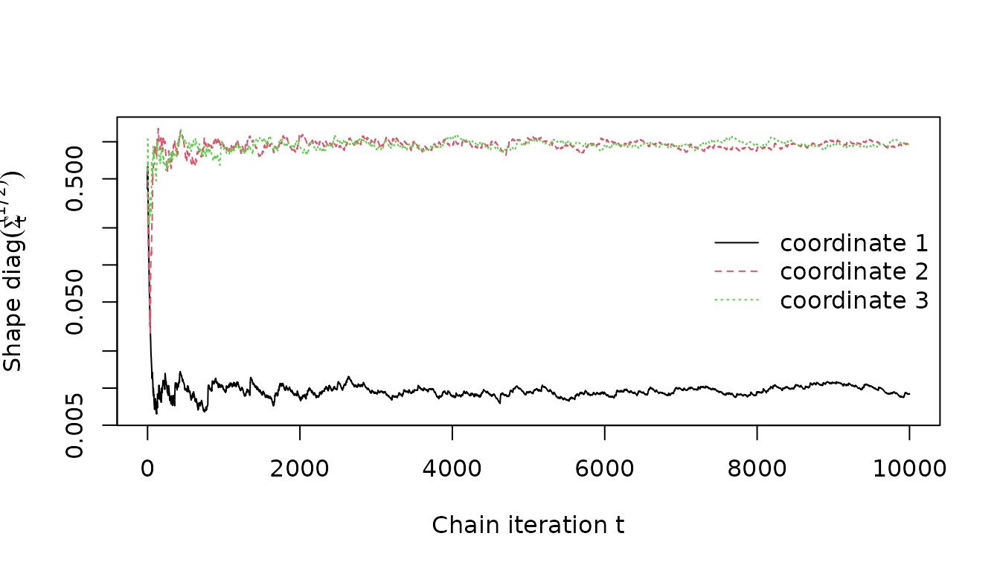

Robust gradient-based MCMC with the Barker proposal
Source:vignettes/barker-proposal.Rmd
barker-proposal.RmdThe rmcmc package provides a general-purpose
implementation of the Barker proposal (Barker
1965), a gradient-based Markov chain Monte Carlo (MCMC) algorithm
inspired by the Barker accept-reject rule, proposed by Livingstone and Zanella (2022). This vignette
demonstrates how to use the package to sample Markov chains from a
target distribution of interest, and illustrates the robustness to
tuning that is a key advantage of the Barker proposal compared to
alternatives such as the Metropolis adjusted Langevin algorithm
(MALA).
Example target distribution
As a simple example of a target distribution, we consider a
3-dimensional Gaussian target with heterogeneous scales such that the
standard deviation of the first coordinate is 0.01 and that of other
coordinates is 1. The rmcmc package expects the target
distribution to be specified by a function evaluating the logarithm of
the (potentially unnormalized) probability density at a point, and for
gradient-based methods such as the Barker proposal, additionally
requires specification of a function evaluating the gradient of this log
density function. The two functions should be wrapped in to a list under
the names log_density and gradient_log_density
respectively.
Creating proposal distribution
rmcmc provides implementations of several different
proposal distributions which can be used within a Metropolis–Hastings
based MCMC method:
-
barker_proposal: The robust gradient-based Barker proposal proposed by Livingstone and Zanella (2022). -
langevin_proposal: A gradient-based proposal based on a discretization of a Langevin dynamics. -
random_walk_proposal: A Gaussian random-walk proposal.
Each function requires the first argument to specify the target
distribution the proposal is to be constructed for. Optionally
additional arguments can be used to specify the scalar
scale of the proposal, a vector or matrix defining the
proposal shape and routines to sample the auxiliary
variables used in the proposal.
Here we create an instance of the Barker proposal, specifying only
the target distribution with the other arguments left as their defaults.
Rather than specifying fixed scale and shape
tuning parameters, in the next section we illustrate how to set up
adaptation of these parameters during a warm-up stage to the chains.
proposal <- barker_proposal(target_distribution)Setting up adaptation of tuning parameters
rmcmc has support for adaptively tuning parameters of
the proposal distribution. This is mediated by ‘adapter’ objects which
define method for update the parameters of a proposal based on the chain
state and statistics recorded during a chain iteration. Below we
instantiate a list of adapters to (i) adapt the scalar scale of the
proposal distribution to coerce the average acceptance probability of
the chain transitions to a target value, and (ii) adapt the shape of the
proposal distribution with per-coordinate scaling factors based on
estimates on the coordinate-wise variances under the target
distribution.
adapters <- list(
scale_adapter(proposal, initial_scale = 1., target_accept_prob = 0.4),
variance_adapter(proposal)
)The adapter updates will be applied only during an initial set of ‘warm-up’ chain iterations, with the proposal parameters remaining fixed to their final adapted values during a subsequent set of main chain iterations.
Sampling a chain
To sample a chain we first need to specify the initial chain state.
The rmcmc package encapsulates the chain state in a list
which tracks the current position of the chain, but also additional
quantities such as the auxiliary variables used to generate the proposed
perturbation to the state, and cached values of the log density and its
gradient once computed once at the current position to avoid
re-computation. The chain_state function allows creation of
a list of the required format, with the first (and only required)
argument specifying the position. Here we generate an initial state with
position coordinates sampled from a standard normal distribution.
initial_state <- chain_state(rnorm(dimension))We now have everything needed to sample a Markov chain. To do this we
use the sample_chain function from rmcmc. This
requires us to specify the target distribution, proposal distribution,
initial chain state, number of adaptive warm-up iterations and
non-adaptive main chain iterations and list of adapters to use.
n_warm_up_iteration <- 10000
n_main_iteration <- 10000Here we sample a chain with 10^{4} warm-up and 10^{4} main chain
iterations. We set trace_warm_up to TRUE to
record statistics during the adaptive warm-up chain iterations.
results <- sample_chain(
target_distribution = target_distribution,
proposal = proposal,
initial_state = initial_state,
n_warm_up_iteration = n_warm_up_iteration,
n_main_iteration = n_main_iteration,
adapters = adapters,
trace_warm_up = TRUE
)If the progress package is installed a progress bar will
show the chain progress during sampling. The return value of
sample_chains is a list containing fields for accessing the
final chain state (which can be used to start sampling a new chain), any
variables traced during the main chain iterations and any transition
statistics recorded.
mean_accept_prob <- mean(results$statistics[, "accept_prob"])
adapted_shape <- proposal$parameters()$shape
cat(
sprintf("Average acceptance probability is %.2f", mean_accept_prob),
sprintf("True target scales: %s", toString(scales)),
sprintf("Adapter scale est.: %s", toString(adapted_shape)),
sep = "\n"
)
#> Average acceptance probability is 0.40
#> True target scales: 0.01, 1, 1
#> Adapter scale est.: 0.00897727437719285, 0.969944570138433, 0.977759033606351Visualizing adaptation
We can plot how the proposal shape and scale parameters varied during
the adaptive warm-up iterations, by accessing the statistics recorded in
the warm_up_statistics field with the results
object.
First considering the scalar scale parameter , which is controlled to achieve a target average acceptance rate, we see that the adaptation successfully coerces the average acceptance rate to be close to the 0.4 target value and that the scale parameter adaptation has largely stabilized within the first 1000 iterations.
par(mfrow = c(1, 2))
plot(
exp(results$warm_up_statistics[, "log_scale"]),
type = "l",
xlab = expression(paste("Chain iteration ", t)),
ylab = expression(paste("Scale ", sigma[t]))
)
plot(
cumsum(results$warm_up_statistics[, "accept_prob"]) / 1:n_warm_up_iteration,
type = "l",
xlab = expression(paste("Chain iteration ", t)),
ylab = expression(paste("Average acceptance rate ", alpha[t])),
ylim = c(0, 1)
)Now consider the adaptation of the diagonal shape matrix , based on estimates of the per-coordinate variances, we see that the adaptation converges towards the known heterogeneous scales along the different coordinates.
matplot(
sqrt(results$warm_up_statistics[, paste0("variance_estimate", 1:dimension)]),
type = "l",
xlab = expression(paste("Chain iteration ", t)),
ylab = expression(paste("Shape ", diag(Sigma[t]^(1 / 2)))),
log = "y"
)
legend(
"right",
paste0("coordinate ", 1:dimension),
lty = 1:dimension,
col = 1:dimension,
bty = "n"
)